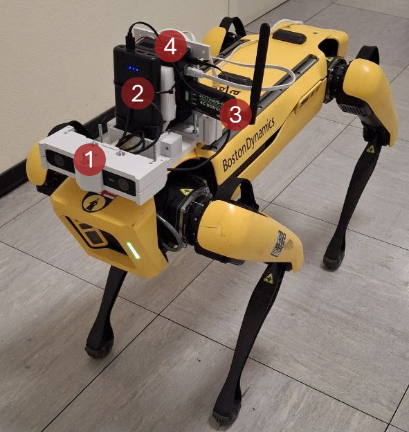

Immersive Spot Teleoperation
Modular software for immersive teleoperation of the Boston Dynamics Spot quadruped using a Meta Quest 2 head-mounted display (HMD). The operator commands torso attitude from head orientation and planar locomotion from handheld thumbsticks, while stereo video from a ZED 2 camera is streamed over RTSP through a public-IP cloud relay.
This documentation is written from the Technical approach section of the manuscript Design and User Evaluation of an Immersive Teleoperation System for a Quadruped Robot and from the source tree of github.com/aliy98/immersive-spot-teleoperation.
{kind=link}

Spot with the payload used in this work, mounted in a 3D-printed case: (1) ZED 2 stereo camera, (2) power supply, (3) SIM7600G-H 4G dongle, and (4) NVIDIA Jetson Nano.
What the system does
Torso-orientation tracking — an infinite-horizon LQR maps HMD pitch and yaw onto the robot body-fixed frame so the operator can look around without interrupting walking.
Locomotion — right/left Quest thumbsticks map to heading-frame linear velocities \(v^X, v^Y\) and yaw rate \(\omega^Z\).
Real-time stereo video — a GStreamer pipeline with NVIDIA hardware H.264 encoding publishes an RTSP stream to MediaMTX; the Windows client decodes and renders to the HMD with OpenGL.
Long-range link — MQTT (Mosquitto) carries control at 20 Hz and RTSP carries video through a cloud VM; the robot uses 4G rather than site Wi-Fi.
The torso-orientation task (2 DoF) and the locomotion task (3 DoF) run in parallel. That five-DoF combination is not available on the stock Spot tablet, which has only two thumbsticks.